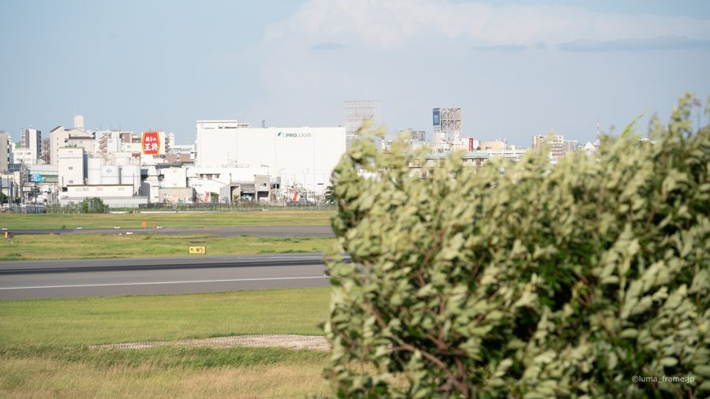
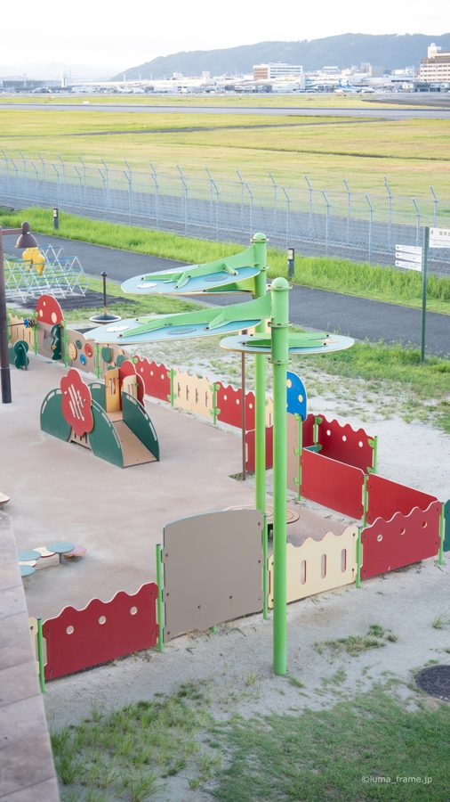

全 85 枚。Instagram 12 枚 / Website 追加候補 8 枚を選定。掲載済み 20 枚 (aviation-26〜45) は除外対象です。サムネイルをクリックすると元ファイルが開きます。
離陸直後 + 山。ストーリー性があり単体で成立
787 正面・空だけの背景。正方形にも縦にも切れる。汎用性が最も高い
Web 用途: ヒーロー / OG 画像候補。余白が広く文字が載る

赤い花の前ボケ + JAL 737。季節感と奥行き
Web 用途: 前ボケ表現の作例
花の前ボケ + ANA 737。2856 と対の構図
木々越しの着陸。前ボケ + 山 + 街の三層構図。作品性が高い
Web 用途: ギャラリーの引きの一枚。奥行きのある構図
ひまわり縦位置。4:5 にそのまま収まる。夏の投稿の主役
Web 用途: 縦位置作例。ギャラリーのリズムをつくる
2933 の別カット。カルーセル 2 枚目向き
ひまわり越しの空。抜けがあり、文字を載せやすい

プロペラ機 (Q400)。ジェット機ばかりの並びに変化をつける
Web 用途: 機種のバリエーション
夕景の JAL 767 + 山。落ち着いたトーン
Web 用途: 夕景・逆光の作例
夕暮れの流し撮りクローズアップ。技術が一目で伝わる
Web 用途: 流し撮りの作例 (技術説明とセットで)
夜の伊丹ターミナル。撮影地が一目でわかる引きの絵
Web 用途: 夜間・低照度の作例
ITAMI OSAKA ITAMI AIRPORT のサイン。位置情報タグと相性が良い